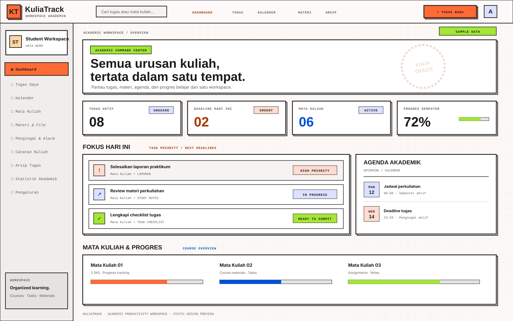
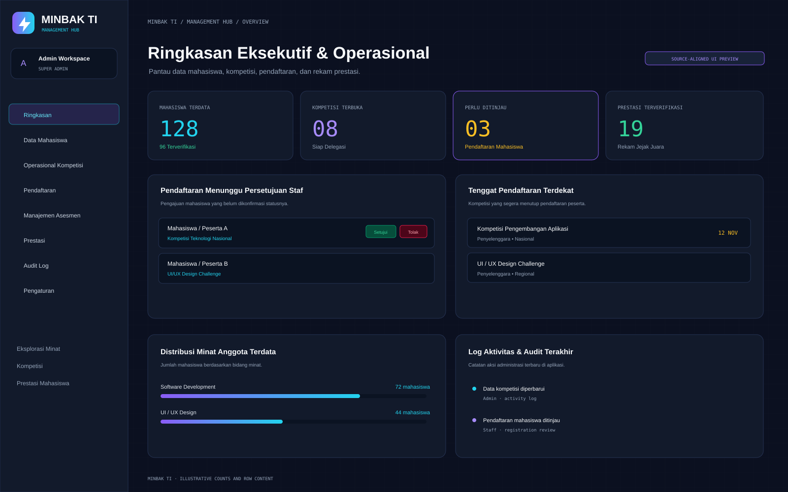
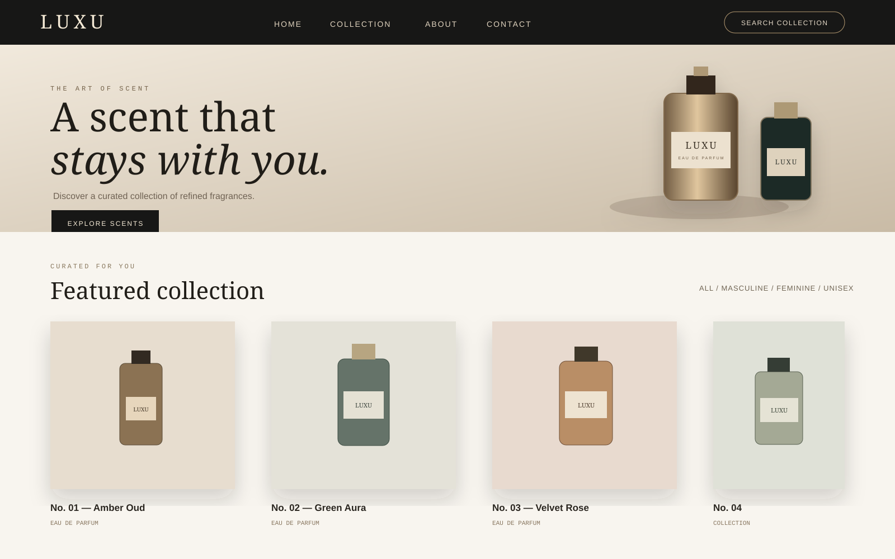
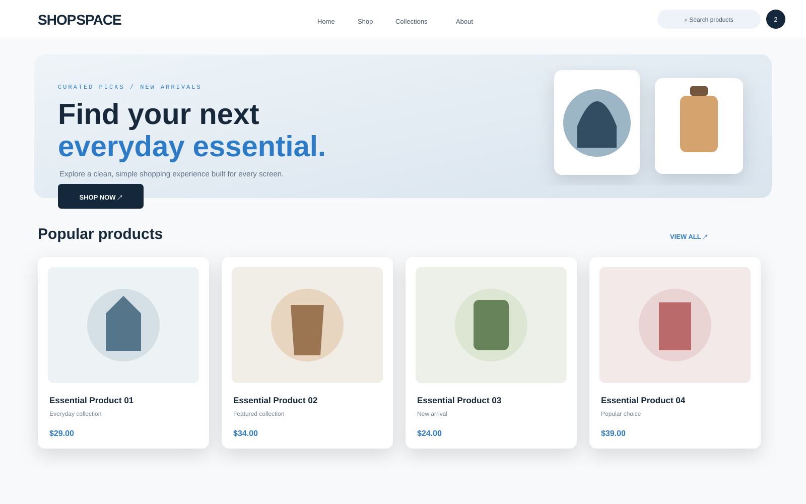
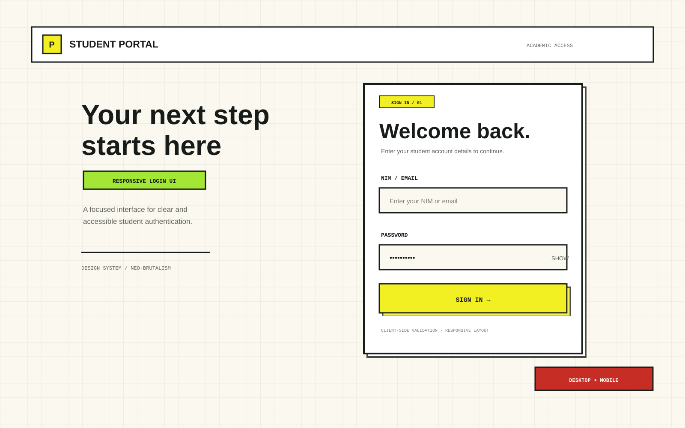
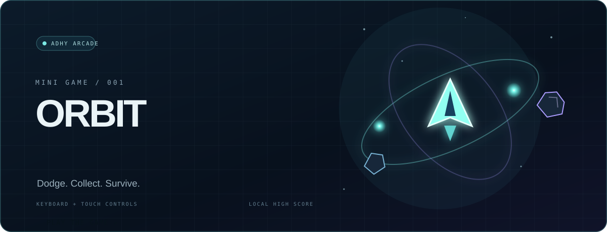

01
Frontend
Responsive interfaces and component-based application experiences.
I'm Rayhan Adhyfa Firdaus — I build web applications that connect clear, responsive interfaces with practical application logic, APIs, and data.
I build web applications that connect thoughtful interfaces with practical application logic.
My work spans React and TypeScript frontends, Laravel and Node.js backends, REST APIs, and data handling. I learn by solving real workflow problems, testing edge cases, and refining the experience.
Browse my repositories ↗
Informatics Student · Indonesia
The tools I use to shape ideas into interfaces, applications, and working systems.
Responsive interfaces and component-based application experiences.
Application logic, service endpoints, and server-side workflows.
Structured data, file handling, and real-time application events.
Iterative development, version control, and application verification.
A few projects that reflect what I've been learning and building.

DASHBOARD DESIGN PREVIEW · SAMPLE DATAAn offline-first academic workspace for organizing courses, assignments, materials, notes, schedules, and deadlines in one application.
Includes multi-view task management (Grid, List, Kanban), an interactive academic calendar, course-linked materials, productivity statistics, data backup, and deadline alerts with browser notifications and synthesized audio.

MANAGEMENT HUB PREVIEWA web platform for student interest mapping, competition information, participant registration, and achievement records.
Combines a public website with an internal management hub, including assessment workflows, role-based access, achievement verification, and administrative activity logs.

MARKETPLACE PROTOTYPEA perfume brand web project spanning a collaborative landing page and a separate React marketplace prototype.
I led the landing-page team and contributed to layout, content structure, and responsive details; the marketplace explores product catalogues, category filtering, cart, wishlist, and Supabase data access.

LIVE DEMO PREVIEWA responsive e-commerce website focused on product browsing, clear navigation, and a simple shopping-cart experience.
Built with a mobile-first approach and interface components designed to remain usable across desktop and mobile screen sizes.

ACADEMIC FRONTEND PROJECTA responsive student login-page implementation emphasizing visual hierarchy, form feedback, and client-side validation.
Includes NIM/email and password validation, password visibility control, and desktop-to-mobile layout behavior. External SSO buttons are visual mockups only.
A small arcade experiment built from scratch. Dodge incoming asteroids, collect glowing energy, and chase your personal best. No downloads, no account — just play.
Launch Orbit Breaker
PLAYABLE MINI GAME ↗Good work starts with curiosity and gets better through iteration. I'm always looking for the next problem worth solving.
Connect on GitHub